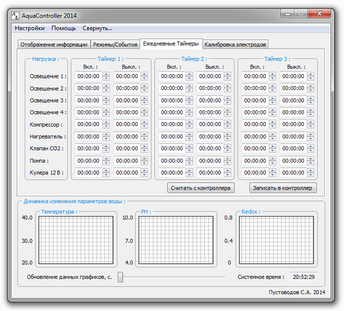

На текущей вкладке ПО AquaController 2014 отображаются временные интервалы устанавливаемых таймеров. На каждый канал предусмотрено 3 таймера.

Внешний вид вкладки "Ежедневные таймеры".
Устанавливаемый диапазон времени - от <00:00:00> до <23:59:59>. Если необходимо что бы выбранный канал работал постоянно - установите в любом из таймеров канала в графе <Выкл.> значение <24:00:00>. Временные интервалы выбранного канала могут перекрывать друг друга - в этом случае канал будет активным с наименьшего до наибольшего значения времени заданных интервалов.
Считывание временных интервалов таймеров происходит при подключении к устройству. Если временные интервалы таймеров были изменены в текущем подключении к устройству, но появилась необходимость получить прежние значения, а так же узнать какие значения параметров находятся в контроллере - нажмите кнопку <Считать с контроллера>. После установки необходимых временных интервалов таймеров - нажмите кноку <Записать в контроллер>.
После установки параметров нажмите кнопку <Записать EEPROM> на вкладке <Отображение информации>, для записи данных в энергонезависимую память контроллера.